Практичні курси · журнал «ДентАрт» 2025 №2
Дисколорит девітального зуба: резекція дентину
DISCOLORATION OF A NON-VITAL TOOTH: RESECTION OF DENTIN
Дисколорит зубів виникає внаслідок зміни кольору емалі (профарбований зубний наліт, демінералізація, гіпоплазія емалі, флюороз зубів) і зміни кольору дентину через інфільтрацію барвниками (ендодонтичне лікування з резорцин-формаліном, ейгенолом, травма), через пігментацію (тетрацикліновий синдром) і редукцію предентину (травма, вікові зміни).
У цій статті йдеться про дисколорит дентину внаслідок інфільтрації резорцином після ендодонтичного лікування з обтурацією магістрального каналу резорцин-формаліновою пастою. У цьому випадку зміна кольору зуба відбувається лише за рахунок інфільтрації дентину резорцином, і колір самої емалі залишається без змін.
Усунути дисколорит зуба можна і шляхом резекції профарбованого дентину, замінивши його дентинним відтінком композиту і відновивши яскравим відтінком композиту підвищеної опаковості предентин, який оточує порожнину зуба у топографічних межах відповідно до віку.
Резекція дентину є методом вибору, і успішність цієї техніки усунення дисколориту підтверджується 40-річним досвідом автора.
Причиною дисколориту зубів може бути зміна кольору емалі внаслідок профарбованого зубного нальоту, демінералізації, гіпоплазії, флюорозу зубів і зміна кольору дентину внаслідок інфільтрації барвниками після ендодонтичного лікування з обтурацією резорцин-формаліном, ейгенолом, інфільтрації продуктами розпаду крові при травмі. Окремо можна виділити маскову пігментацію дентину при тетрацикліновому синдромі і редукцію предентину при травмі або вікових змінах топографії зубних тканин.
Для кожної причини дисколориту емалі застосовується відповідний метод усунення цієї естетичної проблеми: професійна гігієна, інфільтрація демінералізованої або флюорозної емалі, пряма й непряма реставрація.
Для усунення дисколориту дентину застосовують внутрішнє відбілювання і маскування коронки зуба, зміненого в кольорі, опаковою реставрацією.
У кожному клінічному випадку лікар виявляє причину дисколориту і ухвалює рішення про застосування того чи іншого методу лікування, тому кожний спосіб усунення дисколориту є вибором лікаря за згоди пацієнта.
Дисколорит з позиції біоміметики
З позиції біоміметики, коли колір реставрованого зуба розглядається як сумарне поєднання в межах топографії оптичних властивостей природних і штучних зубних тканин, дисколорит ендодонтично лікованого зуба пов'язаний лише зі зміною кольору інфільтрованого дентину, а оптичні властивості емалі залишаються незмінними. Тому усунути дисколорит у випадку ендодонтично лікованого зуба можна й треба лише у спосіб ліквідації першопричини патологічного забарвлення дентину, залишаючи емаль інтактною!
Методи усунення дисколориту дентину
Отже, дисколорит коронки зуба можна замаскувати опаковою прямою чи непрямою реставрацією або усунути профарбовування дентину методом внутрішнього відбілювання. Нарешті, що випливає з назви статті, можна просто видалити хірургічно інфільтрований пігментами дентин, і цей метод ми назвали резекцією дентину.
Клінічна техніка резекції дентину з патологічним забарвленням була знайдена нами у 1980-х роках при реставрації передніх зубів після ендодонтичного лікування із застосуванням обтурації резорцин-формаліновою пастою. Автор спробував запатентувати цей спосіб і отримав рішення Всесоюзного інституту патентознавства про видачу патенту за заявкою №4891649/14 на «Способ пломбирования зубов, измененных в цвете» від 11.09.1991 р. і внесення заявленого винаходу до Державного реєстру винаходів СРСР, проте на час отримання авторського свідоцтва Радянського Союзу не стало і процедуру патентування треба було розпочинати заново за російським законодавством… Таким чином, техніка усунення дисколориту ендодонтично лікованого зуба методом резекції профарбованого дентину так і залишилася незапатентованою…
Але це не завадило регулярно і системно застосовувати резекцію дентину при відновленні кольору девітальних зубів зі зміною кольору, як передніх, так і бічних.
На відміну від маскування дисколориту опаковою реставрацією, коли порушувалась ідентичність кольору замаскованого зуба у мінливому освітленні у порівнянні із сусідніми зубами, чи від внутрішнього відбілювання, коли потрібна була серія процедур, а результат визначався роками, резекція дентину, інфільтрованого барвниками, давала швидкий і стійкий естетичний результат відновлення кольору реставрованого зуба.
Клінічні приклади резекції дентину в центральних різцях
Приводом для написання цієї статті стали два клінічні випадки, в одному з яких резекція дентину була зроблена рік тому, а в другому клінічний результат після резекції дентину має тривалість 23 роки моніторингу і сервісного обслуговування, включаючи реновацію бічних зубів по завершенню кожного 10-річного терміну служби.
У першому клінічному випадку у пацієнтки 36 років на консультації виявлено, що верхній правий центральний різець змінений у кольорі після ендодонтичного лікування. Це було однією з причин звернення за стоматологічною допомогою. Відновлення кольору зуба 11 зроблено під час першої реставраційної сесії, коли була відновлена анатомічна форма всіх верхніх зубів в рамках системного відновлення оклюзії.
Для відновлення оригінального кольору коронки зуба 11 зроблено резекцію інфільтрованого дентину в техніці, етапи якої проілюстровані рисунками. Враховуючи гарний стан дентину кореня і обтурації, для армування зуба був встановлений композитний штифт EasyPost з фіксацією на текучий композит SDR після адгезивної підготовки дентинним адгезивом Prime & Bond Universal у техніці тотального протравлювання (всі компоненти реставраційної програми Dentsply Sirona).
Топографія ендодонтично лікованого зуба
Девітальний зуб із дисколоритом має профарбований дентин, який просвічує крізь інтактну напівпрозору емаль. Кореневий канал заповнений обтураційним матеріалом, який і є визначальною причиною дисколориту зуба через вміст резорцину або ейгенолу.
За наявності також дисколориту емалі — гіполазії емалі, включаючи флюороз зубів, тріщин емалі внаслідок функціонального перевантаження, демінералізації емалі та реставрованих дефектів вестибулярної емалі — відновлювати вестибулярну емаль слід наприкінці, коли центр і оральна поверхня коронки зуба відновлені й зміцнені.
Оперативний доступ і резекція пігментованого дентину
Після ізоляції треба видалити оральну стінку і центральну частину коронки зуба, створивши доступ до всієї вестибулярної поверхні емалі зсередини.
Далі, використовуючи добре центрований турбінний наконечник, рухаючись вздовж внутрішньої поверхні емалі, слід алмазною головкою середньої зернистості обережно видалити пігментований дентин спочатку від центру до ріжучого краю, потім від шийки до центру.
Видалення пігментованого дентину можна візуально контролювати крізь напівпрозору емаль під час резекції, а між етапами — через дзеркало та підкладаючи під емаль білий непрозорий матеріал (вату, тефлон).
Підтримка вестибулярної емалі композитом
Після адгезивної підготовки (краще застосувати техніку тотального протравлювання) слід зміцнити вестибулярну емаль, відновивши основний дентин вибраним опаковим відтінком композиту. Товщина дентинного шару має бути контрольованою: біля шийки на рівні порожнини зуба, поступово витончуючись у напрямку ріжучого краю, і шар дентину має закінчитися за 1–2 мм до спроєктованого ріжучого краю.
Треба дати певний час на зниження частини полімеризаційних напружень, використавши його на формування композитної вкладки або встановлення композитного штифта в корені.
Формування світлого центру коронки зуба
Згідно з нашою біоміметичною концепцією досягнення природного кольору реставрованого зуба, центр слід наповнити білим опаковим відтінком композиту, який компенсуватиме відсутність предентину, втраченого через ендодонтичне втручання. Таким універсальним опаковим відтінком є WO (White Opaq) наногібридного композиту Esthet-X HD (Dentsply Sirona).
Спочатку текучим композитом слід ізолювати обтурований канал і сформувати композитну вкладку або встановити композитний штифт на текучий композит альтернативно. Далі цим відтінком треба виповнити центр коронки, керуючись топографією предентину для відповідного віку.
Відновлення дентину оральної поверхні
Далі дентинним відтінком композиту слід відновити оральну поверхню коронки в межах топографії дентино-емалевого з'єднання, залишаючи контрольований простір для відновлення оральної основної і поверхневої емалі.
Дентин відновлюємо мікрогібридним композитом, який, на відміну від наногібридного композиту, краще вклеюється і за еластичністю подібний до природного дентину. Вносимо, вклеюємо і полімеризуємо дві порції композиту: перша порція, пришийкова, призначена для надійного прикріплення до крайової емалі, друга порція продовжується в межах топографії дентину, завершуючись за 0,5–1 мм до ріжучого краю.
Відновлення оральної емалі і ріжучого краю
Практично всю оральну емаль відновлюємо наногібридним композитом — відтінком тіла, а прозорим відтінком — оральну і вестибулярну частини ріжучого краю, ретельно притерті між собою.
Завершуємо реставрацію коронки зуба відновленням контактних поверхонь: спочатку латеральної, потім медіальної, контролюючи ширину коронки штангенциркулем, а висоту — оклюзійним дзеркалом у порівнянні із симетричним зубом. Для відновлення контактної поверхні використовуємо також два різні композити: мікрогібридний відтінку тіла в пришийковій частині і наногібридний прозорий у частині контактного пункту і куточка ріжучого краю.
Верхні і нижні, передні і бічні зуби до реставрації.
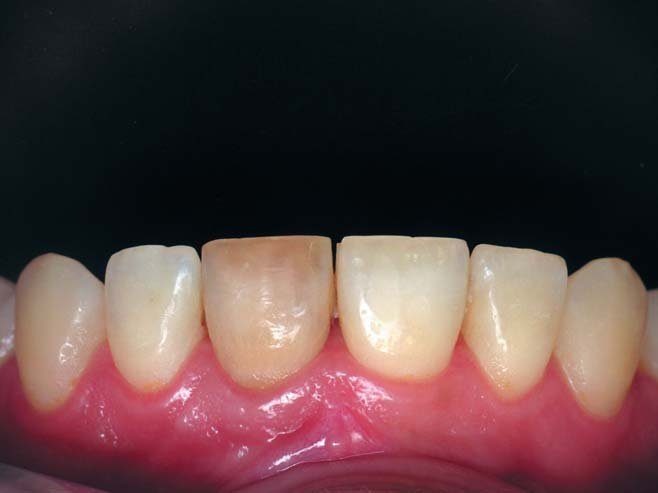
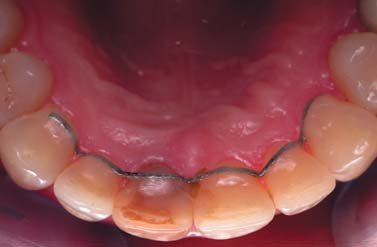
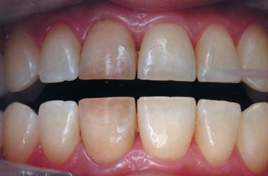
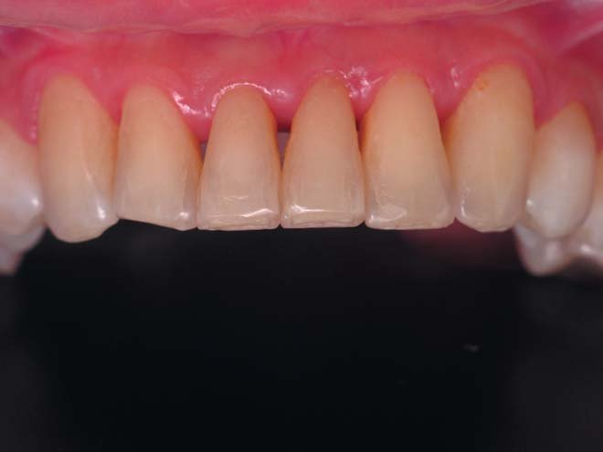
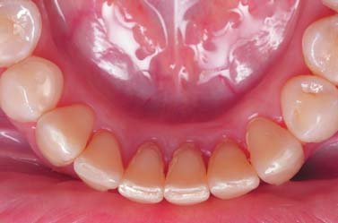
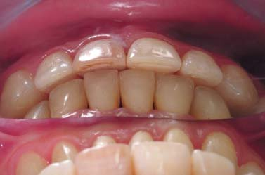
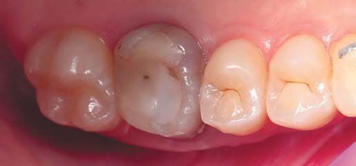
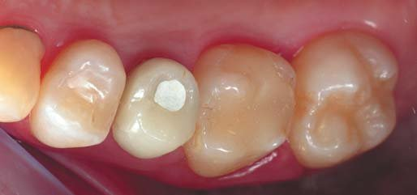
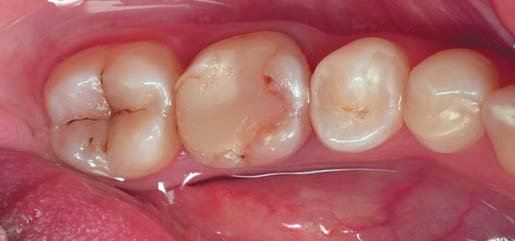
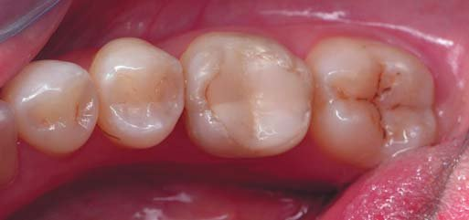
Прикус з трьох боків, позиції оклюзії і флуоресценція.
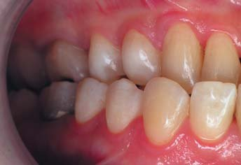
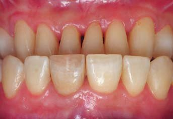
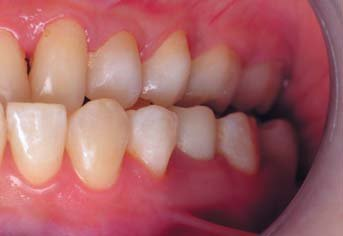
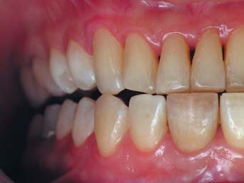
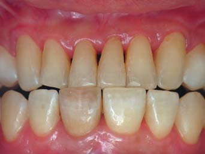
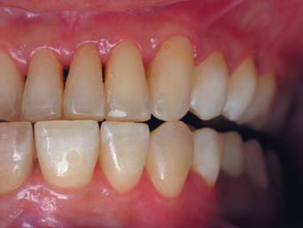
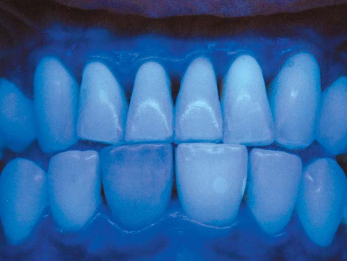
Флуоресценція передніх зубів демонструє проблему зуба 11, тобто зміну кольору зуба видно як у діапазоні видимого світла, так і в ультрафіолетовому діапазоні. Невелика пломба на латеральній поверхні зуба 21 має помітно більшу флуоресценцію, і така яскравість в ультрафіолеті, на відміну від природної, притаманна певним японським композитам.
Фотографії, зроблені під час консультації, демонструють зношення передніх зубів. Верхні центральні різці зношені з оголенням дентину по ріжучому краю, латеральні різці та ікла — в межах емалі. Нижні різці мають подібне зношування ріжучих країв. Зуб 42 має скошений ріжучий край, що може бути наслідком зношування в повороті коронки, а наявність ретейнера на верхніх передніх зубах свідчить про завершений активний період ортодонтичного лікування.
Верхні і нижні бічні зуби мають різний рівень зношеності: бездоганні, як для цього віку, премоляри і другі моляри, зношені перші моляри, два з яких є девітальними, на місці зуба 25 встановлена тимчасова коронка з опорою на імплантаті, і відсутні всі чотири треті моляри, можливо, внаслідок ортодонтичного лікування.
Усі зуби у звичному змиканні перебувають у контакті, співвідношення перших молярів є незначною мірою мезіальним, середня лінія верхнього і нижнього зубних рядів має зміщення праворуч. Звертають на себе увагу відкриті контакти направляючих горбиків лівих бічних зубів, тому ортодонтичне втручання можна вважати незавершеним.
Позиції прикусу у протрузії і латеротрузії показують домінантне змикання різців та іклів.
Відновлення верхнього центрального різця із дисколоритом у техніці резекції пігментованого коронкового дентину.
Зуб 11 до реставрації. На знімку в оклюзійному дзеркалі добре видно звичайний колір емалі у порівнянні із зубом 21 і концентрацію профарбовування коронки зуба 11 лише в дентині, включаючи ріжучий край. Кореневий канал обтурований рівномірно до апікального звуження, періодонтальна щілина без ознак захисної реакції. У коронці наявні пломби Класу III. Ясенний край напружений, що є зрозумілим за наявності ретейнера.
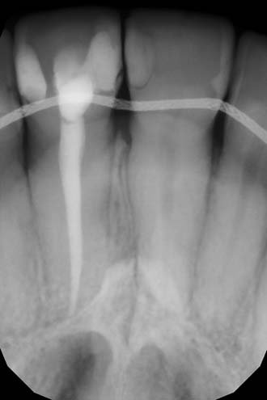
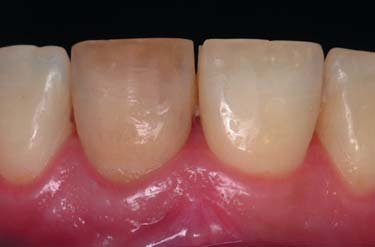
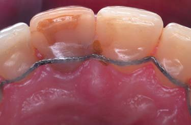
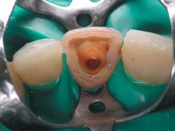
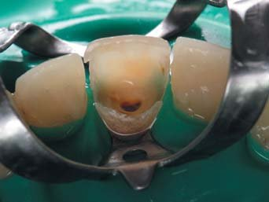
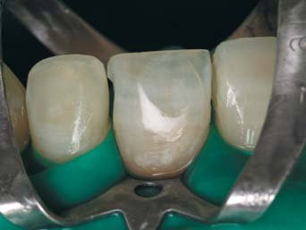
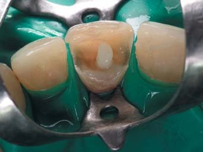
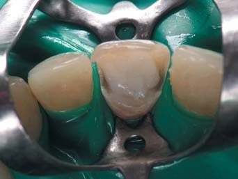
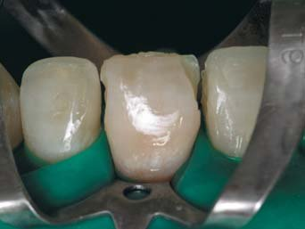
Після очищення поверхні передніх зубів професійною пастою встановлений рабердам і профарбований зуб 11 зафіксований клампом-метеликом.
Спочатку був створений доступ з орального боку до всього коронкового дентину і перевірена якість обтурації входу в кореневий канал (міцність дентину, щільність і якість прилягання обтураційного матеріалу).
Далі алмазним бором звичайної зернистості в добре центрованому турбінному наконечнику видаляємо профарбований дентин від центру до ріжучого краю, рухаючись вздовж емалі і візуально контролюючи операцію через емаль. Переконавшись у міцності емалі, видалили обидві пломби.
Зроблена адгезивна підготовка, і дентинним відтінком мікрогібридного композиту відновлений дентин по всій вестибулярній емалі. Композитний штифт встановлений на текучий композит у підготовлений калібрований канал.
Центральна частина коронки відновлена білим відтінком підвищеної опаковості в компенсацію відсутності предентину в реставрованому зубі і щоб забезпечити яскравість на рівні симетричного вітального зуба.
По оральній поверхні дентинним відтінком відновлений дентин і емалевим відтінком наногібридного композиту емаль майже до контактних поверхонь.
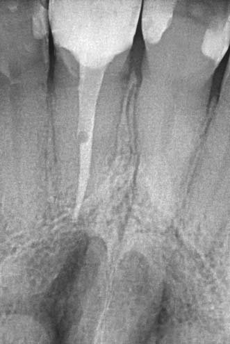
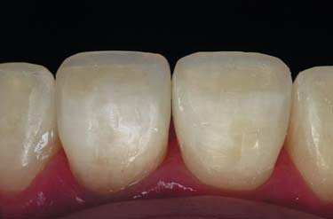
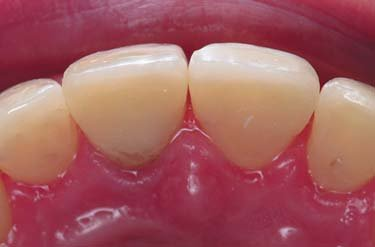
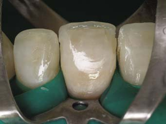
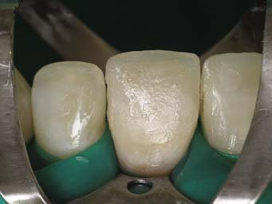
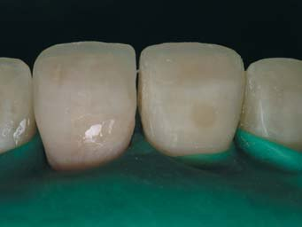
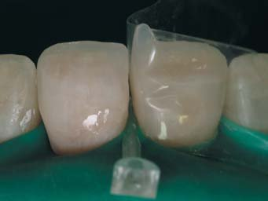
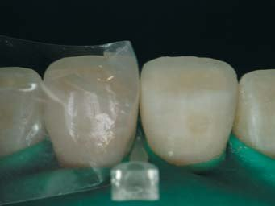
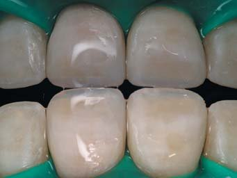
Оральна поверхня завершена прозорим відтінком наногібридного композиту.
Вестибулярно відтінками тіла і прозорим заповнені дефекти коронки по контактних поверхнях і ріжучому краю. Ефекти опалесценції і гало мають бути забезпечені взаємодією композиту і видимого світла у природний спосіб, тому жодні фарбники і ефект-маси не застосовувалися.
Контактні поверхні відновлені індивідуально контурованими матрицями з розклинюванням зубів прозорими пластиковими клинцями. Спочатку була відновлена латеральна контактна поверхня зуба 11, і штангенциркулем були перевірені попередні розрахунки ширини різців. Відновленням медіальних контактних поверхонь ми завершуємо реставрацію всіх верхніх передніх зубів у симетричності і пропорційності. Тому першою була відновлена медіальна поверхня зуба 21 і оброблена з досягненням розрахованої ширини, а потім відновлена медіальна поверхня зуба 11.
Оральна поверхня центральних різців сформована фінішним бором оливоподібної форми зі збереженням виступаючих крайових валиків і піднебінних горбиків.
Під контролем оклюзійного дзеркала фінішним бором опрацьовані висота коронок, форма латеральних і медіальних куточків обох верхніх центральних різців.
Зуб 11 після реставрації. Відновлені центральні різці мають симетричну пропорційну форму (співвідношення ширини і висоти), позиціоновані контактні пункти, тонкі ріжучі краї (1,3 мм в межах 1 мм). Колір девітального і вітального різців візуально однаковий (білі плями — це пересушена емаль). На рентгенограмі видно встановлений штифт з бульбашкою в текучому композиті і чітке крайове прилягання реставрації до шийки зуба.
Відновлений зуб 11 і верхні передні зуби після полірування.
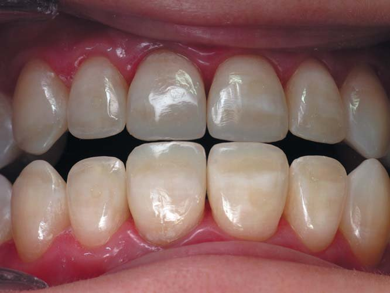
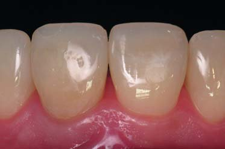
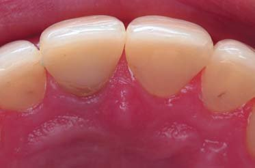
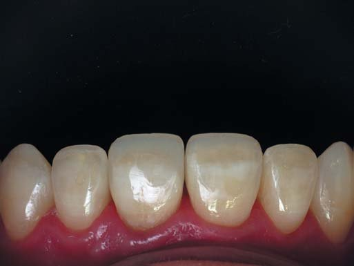
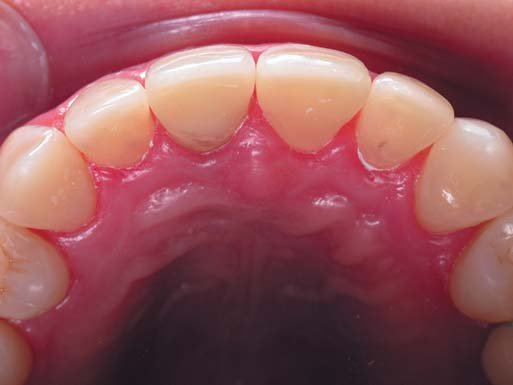
Поверхні композиту і полірованої емалі реставрованих зубів мають візуально однаковий блиск. Шліфування реставрованих зубів зазвичай робить стоматолог, тому що в процесі шліфування можна змінити деталі форми реставрації, і відповідальність за це лежить на стоматологові... А полірування проводить асистент стоматолога, тому що поліруванням можна лише отримати рівнозначний блиск поверхні композиту і полірованої емалі (або не отримати), і за стоматологом залишається тільки контроль якості відполірованої поверхні реставрованих зубів.
Колір реставрованих девітального і вітального центральних різців має однаковий вигляд по шийці, по центру коронок і по ріжучому краю. Дисколорит зуба 11 виявляється тільки в приясенній частині піднебінного горбика. Колір пересушеної емалі має повернутись у звичайний стан після відновлення водного балансу, що може тривати від кількох годин до кількох тижнів у залежності від структури даної емалі. З корекцією кольору реставрацій варто зачекати не менше 4 тижнів — колір може стабілізуватися без втручання…
Оклюзійне дзеркало, встановлене на верхніх премолярах, демонструє, що ікла і центральні різці по висоті містяться в одній площині з премолярами, а висота латеральних різців менша від цієї площини приблизно на 1 мм.
Коронки реставрованих зубів мають симетричну і пропорційну форму — у послідовній реставрації від іклів до контакту між центральними різцями використаний «Золотий коефіцієнт» 1,3 у співвідношенні ширини коронок центрального і латерального різців. Фото зубів в оклюзійному дзеркалі показує правильну форму фронтального секстанта зубної дуги і функціонально активну товщину ріжучих країв товщиною 1,3 мм.
Оптичні властивості природної емалі
Коли виконана процедура резекції коронкового дентину, інфільтрованого пігментами, і непігментована вестибулярна емаль залишилася вільною, можна спостерігати унікальні оптичні властивості зубної емалі…
Зверніть увагу, що на етапі після резекції дентину в обох проаналізованих клінічних випадках зубна емаль як напівпрозора структура має вигляд сірої у відбитому світлі (фото вестибулярної поверхні) і жовтої у світлі, що проходить крізь неї (фото в оклюзійному дзеркалі). Це оптичне явище пов'язане з властивостями селективної взаємодії емалі зі світлом видимого діапазону. Видиме світло білого кольору має діапазон кольорового світла від фіолетового (400 нм) до червоного (700 нм) через проміжні синій, блакитний, зелений, жовтий, помаранчевий кольори з кроком довжини хвиль приблизно 50 нм.
Світло, яке падає на напівпрозоре тіло, яким є природний зуб з оптично складною топографією (поверхнева емаль, основна емаль, дентино-емалеве з'єднання, основний дентин, предентин і пульпа), в залежності від анатомічної форми частково поглинається, частково розсіюється і частково проходить глибше й глибше до повного затухання. Різницю між цими трьома складовими взаємодії видимого світла із зубними тканинами ми сприймаємо як колір зуба.
Особливість взаємодії світла з напівпрозорим тілом полягає в тому, що світло різної довжини хвиль повністю затухає на різній глибині: найменшу дистанцію до повного затухання проходить світло фіолетово-блакитної частини спектра видимого світла, а найбільшу дистанцію до затухання проходить світло жовто-червоної частини спектра. Завдяки цій особливості взаємодії сонячного світла з атмосферою планети ми спостерігаємо, наприклад, удень блакитне небо, а на світанку чи заході сонця — жовто-червоне.
Зубна емаль з її оптичними властивостями і товщиною є непроникною для фіолетово-блакитного світла, завдяки чому ми можемо бачити сірий колір емалі у розсіяному світлі, і проникною для жовто-червоного світла, завдяки чому ми можемо бачити жовтуватий колір емалі в оклюзійному дзеркалі. Ці оптичні властивості природної емалі лежать в основі опал-ефекту і ефекту гало, під які намагаються розфарбовувати реставрації і стоматологи в композиті, і зубні техніки в кераміці, хоча насправді треба лише відтворити топографію зубних тканин відповідними реставраційними матеріалами, і оптичні ефекти будуть відбуватись автоматично.
Ідентичність кольору реставрованих зубів
Отже, процедура відновлення природного кольору ендодонтично лікованого зуба через збереження емалі і резекцію пігментованого дентину завершена, і досягнуто результату візуальної ідентичності вітального і девітального центральних різців. За відсутності елементів конструкції реставрованого зуба, які маскують пігментовані зубні тканини у випадку реставрації вінірами чи коронками, реставровані вітальний і девітальний центральні різці будуть однаково змінюватись у зовнішньому вигляді за різних умов освітлення, тоді як зуб із замаскованим дисколоритом втрачає природну гру зміни світла і зовнішнього вигляду…
Слід мати на увазі, що при перевірці ідентичності кольору центральних різців за допомогою спектрофотометра, наприклад EasyShade (VITA), в даних будуть невеликі відмінності, тому що спектрофотометр тестує тканини на глибину 2 мм, тобто до поверхневих шарів вестибулярного дентину, які представлені у вітальному зубі анізотропною структурою природного дентину з хвильоводним ефектом дентинних канальців, а в девітальному зубі — ізотропною структурою композиту, яка такого ефекту взаємодії зі світлом видимого спектра не має. Тому радимо орієнтуватися на візуальну ідентифікацію при стандартному освітленні, наприклад світильником поля D-Tec (D-Tec AB), а визначення кольору спектрофотометром просто брати до уваги.
Вільна емаль може тріснути
Обов'язково наступного дня слід оглянути реставрований зуб після резекції дентину! Річ у тім, що інтенсивність хімічної реакції полімеризації, запущеної світлом полімеризаційної лампи під час реставрації, поступово зменшується і повністю завершується лише через 24 години. З реакцією полімеризації прямо пов'язані полімеризаційні напруження в конструкції реставрованого зуба. Саме тому через 24 години із повним завершенням утворення полімерної мережі в композиті завершується і наростання напружень, а реставрований зуб набуває стабільності. Полімеризаційні напруження можуть призвести до утворення в збереженій вестибулярній емалі протягом доби після реставрації тріщини, яка, якщо утворилась, то, як правило, проходить через вестибулярну поверхню емалі навскоси через деформацію скручення конструкції. Утворення тріщини не впливає на міцність конструкції реставрованого зуба в цілому, але її видно! У разі виявлення тріщини її слід розкрити фінішним бором і відновити поверхню емалі композитом.
Верхні і нижні, передні і бічні зуби після реставрації.
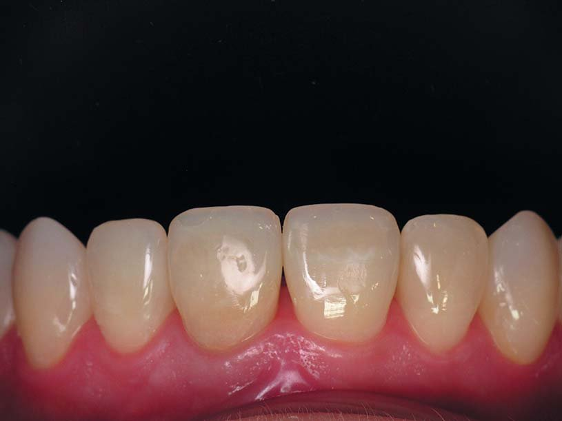
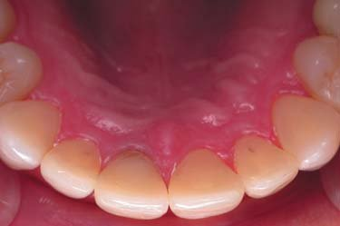
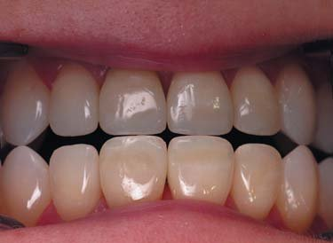
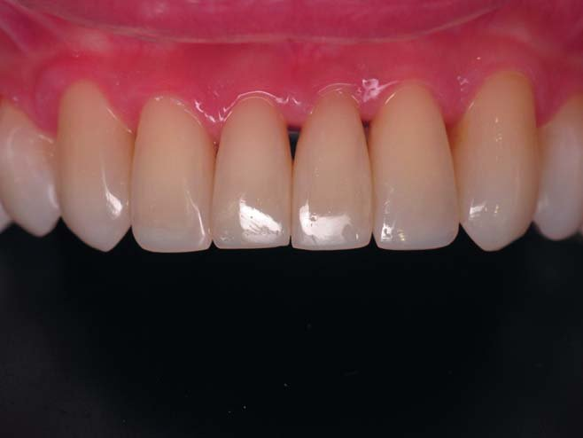
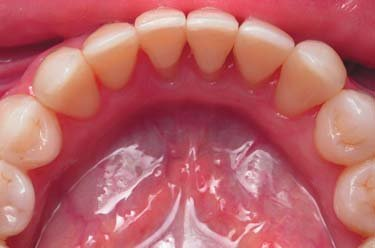
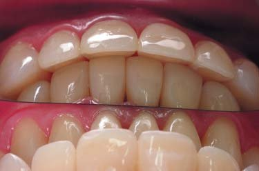
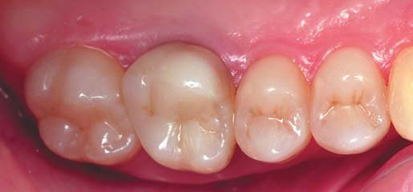
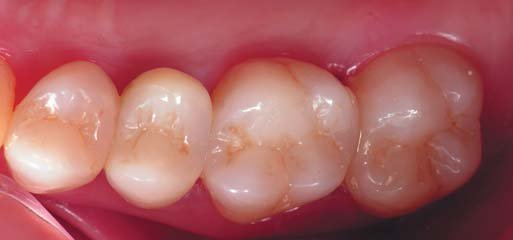
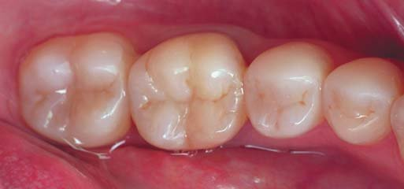
Прикус з трьох боків, позиції оклюзії і флуоресценція (після реставрації).
Стан верхніх і нижніх зубів подано після завершення системної реставрації з відновленням у вільній техніці прямої реставрації анатомічної форми всіх зубів. Системна реставрація виконана протягом двох реставраційних сесій по 3 дні з перервою між сесіями 1 місяць.
Верхні передні зуби симетричні і пропорційні. Колір верхнього правого центрального різця, який мав дисколорит після ендодонтичного лікування, візуально не відрізняється від кольору вітального лівого центрального різця.
Бічні зуби мають відновлену анатомічну форму, яка має забезпечувати повноцінну жувальну ефективність, а також позиціонування нижньої щелепи щодо верхніх. Імплантований зуб 25 відновлений композитом на цирконієвому абатменті з дизайном під пряму техніку реставрації.
Нижні передні зуби, симетричні і пропорційні, мають відновлені ріжучі краї і контактні поверхні з максимальним збереженням вільної поверхні природної емалі. Ріжучі краї відновлені товщиною в межах 1,3 мм. Форма фронтального секстанта нижнього зубного ряду відповідає такій формі верхнього зубного ряду, що забезпечує рівномірний контакт між нижніми і верхніми різцями.
У прикусі збереглося зміщення нижньої центральної лінії праворуч, але правильне змикання зубів у лівих бічних секстантах відновлено. Позиції прикусу у протрузії і латеротрузії мають виключне змикання різців та іклів.
Кожний композит має певну флуоресценцію, спроєктовану виробником, тоді як флуоресценція природних зубів у кожної людини має невеликі відмінності в залежності від мінералізації зубних тканин. Флуоресценція реставрованих зубів є прийнятною, коли різниця між природними і штучними зубними тканинами непомітна для стороннього спостерігача.
Довговічність реставрованих зубів з резекцією коронкового дентину.
Усунення дисколориту лівого центрального різця після давнього ендодонтичного лікування було проведено у 2002 році в техніці резекції інфільтрованого дентину. Після резекції через відсутність вестибулярного дентину напівпрозора емаль виглядає сірою у відбитому світлі і жовтою в оклюзійному дзеркалі через те, що природна емаль не пропускає холодну частину спектра видимого світла. Через видалення нещільного кореневого дентину зуба 21 і за товщини стінки кореня менше 2 мм (протипоказання для установки штифта в корені) для ретенції коронки була виконана коренева вкладка з яскравого дентинного відтінку композиту підвищеної опаковості WO Esthet-X HD (Dentsply Sirona) без будь-якого армування.
Безпосередній результат доводить ефективність техніки резекції дентину для усунення дисколориту, тому що маємо візуально ідентичний колір вітального зуба 11 і девітального зуба 21.
Через 23 роки, у 2025-му, вигляд реставрованих центральних різців щорічного моніторингу демонструє ідентичність кольору вітального зуба 11 і девітального зуба 21. Колір девітального зуба виявився стабільнішим, тому що для ідентичності довелось додати емалевий відтінок композиту по шийці вітального зуба, яка потемніла внаслідок змін топографії предентину за віком.
Висновки
Резекція дентину ефективна і прогнозована! Результат усунення дисколориту переднього зуба шляхом видалення профарбованого дентину і збереження природної емалі можна отримати безпосередньо після завершення реставрації, це добре видно і лікареві, і пацієнтам, як це було показано в першому клінічному випадку.
Резекція дентину стабільна і надійна! Довгострокові результати функціонування передніх і бічних зубів, в яких було зроблено резекцію дентину, доводять стабільність кольору і надійність конструкції реставрованого зуба зі штучним коронковим дентином, як це було показано у другому клінічному випадку.
Ясна річ, довговічність реставрованих зубів залежить не тільки від виконання, але і від дотримання загальних рекомендацій з експлуатації. Користування захисною капою, яка ізолює верхні і нижні зуби між собою в період стискання щелеп як реакції на стрес, є обов'язковим: нічною капою (night guard) постійно і денною капою (day guard) на період очікуваного стресу.
Резекція дентину в девітальному профарбованому зубі є предметом вибору стоматолога за узгодженням із пацієнтом! Свідомий вибір вимагає від стоматолога не лише самої ідеї усунення першопричини дисколориту, а й певних мануальних навичок і таланту для її реалізації в клінічній практиці.
Література
- Грисимов В. Н. Оптическая анизотропия эмали зуба // ДентАрт. — 2016. — № 1. — С. 8–16.
- Грисимов В. Н. Оптическая анизотропия дентина зуба // ДентАрт. — 2016. — № 3. — С. 4–12.
- Радлінський С. В. Реставрація зубів матеріалами «Дентсплай» // ДентАрт. — 1995. — № 1. — С. 65.
- Радлинский С. В. Реставрационные конструкции переднего и бокового зубов // ДентАрт. — 1996. — № 4. — С. 22–29.
- Радлинский С. В. Реставрация зубов, измененных в цвете // ДентАрт. — 1998. — № 1. — С. 30–40.
- Радлинский С. В. Системное восстановление зубов и прикуса // ДентАрт. — 2007. — № 3. — С. 38–48.